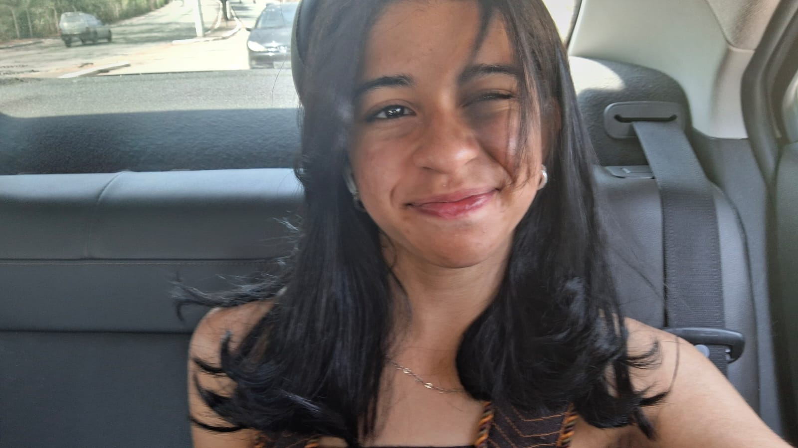

A ideia de fazer um site relacionado ao desenho Moranguinho surgiu de lembranças e nostalgias da minha infância, já que o desenho era meu favorito, desta forma eu pude concluir o trabalho de uma forma leve e descontraída, além de que, já saber muito sobre o assunto trouxe facilidade na busca de informações.
O capitulo escolhido também era meu preferido, pois retrata a chegada da personagem "Cerejinha", a qual eu gostava e me identificava muito.
Esta sou eu!!